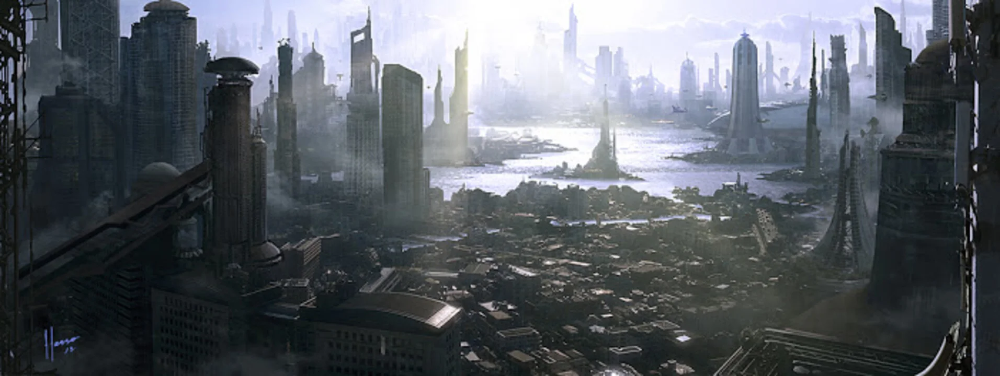
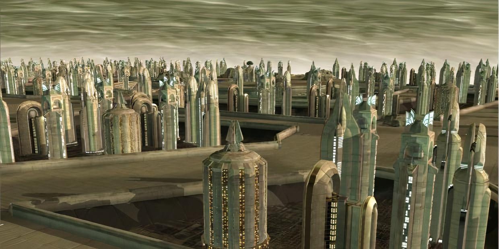

EXPLORE KEY WORLDS
OF THE EMPIRE
Brief description of the planets

Coruscant

Naboo

Cantonica

Denon

Corellia

Muunilinst
Planet Spotlight
Coruscant: Capitol of the Galactic Empire
A vast ecumenopolis covering an entire world, Coruscant stands as the political, military, and cultural heart of the Empire. From its towering spires to its deep undercity, the planet functions as the center of law, order, and Imperial administration. Every major government decision begins here.
Region: Core Worlds
Type: City Planet (Ecumenopolis)
Imperial Presence: Imperial Palace, ISB Headquarters, Coruscant Guard, Navy High Command
Strategic Role: Political capital, command center, intelligence network hub
Service Opportunitites:
- Coruscant Guard
- Admisitrative support
- ISB operations
- Officer training
Naboo: Cultural Jewel of the Empire
A serene world of rolling hills, elegant architecture, and artisitic tradition. Naboo provides the Empire with culture, diplomacy, and refined leadership. Its peaceful environment and skilled citizens make it a model Imperial world.
Region: Mid Rim
Type: Human Settlement/Terrestrial
Imperial Presence: Light garrison, naval embassy offices
Strategic Role: Diplomatic symbol, cultural center, resource exporter
Service Opportunitites:
- Local garrison forces
- Security for trade routes
- Diplomatic escort support
Cantonica: Luxury Hub of the Corporate Elite
Cantonica is known across the galaxy for its wealth, casinos, and business districts. Under Imperial oversight, this desert world thrives as a financial powerhouse attracting trade, investment, and influential figures.
Region: Outer Rim
Type: Desert/Resort-Industrial
Imperial Presence: Imperial Security Bureau detachments, anti-smuggling units
Strategic Role: Financial oversight, trade regulation, high-value commerce
Service Opportunitites:
- ISB surveillance and security
- Anti-smuggling enforcement
- VIP protection
Denon: Urban World of Endless Industry
Often compared to Coruscant, Denon is a massive city-world with no planetary breaks in development. It serves as a major transit and shipping hub for Imperial forces, supporting troop deployment and supply chains across the Mid Rim.
Region: Mid Rim
Type: Urban-Industrial
Imperial Presence: Major garrisons, naval docking stations, logistics command
Strategic Role: Military deployment center, logistics coordination, trade hub
Service Opportunitites:
- Infantry or stormtrooper garrison duty
- Naval engineering
- Logistics and supply corps
Corellia: Forge of the Empire's Finest Starships
Corellia is famed for producing elite pilots, technicians, and some of the best starships in the galaxy. Its shipyards are vital to the Imperial Navy, constructing cruisers, transports, and TIE components used throughout the Empire.
Region: Core Worlds
Type: Industrial/Shipyard
Imperial Presence: Navy shipyards, pilot academies, heavy security
Strategic Role: Starship manufacturing, pilot training, naval deployment
Service Opportunitites:
- Navy pilot program
- Engineering corps
- Shipyard security
- Officer training
Hoth: Remote Frozen Outpost of Strategic Surveillance
Hoth is an isolated, ice-covered world located in the far reaches of the Outer Rim. Though largely uninhabited, the Empire uses Hoth's remote environment for covert sensor stations, survival training, and long-range monitoring of nearby systems. Its brutal climate and near-constant blizzards make it an ideal location for hidden intelligence operations.
Region: Outer Rim Territories
Type: Frozen Ice World
Imperial Presence: Sensor arrays, remote listening posts, survival training camps
Strategic Role: Monitoring remote hyperspace routes, testing cold-weather gear and operations, hosting covert surveillance installations
Service Opportunitites:
- Cold-weather infantry detachments
- Sensor and surveillance technicians
- Remote outpost maintenance
- Search and recovery teams